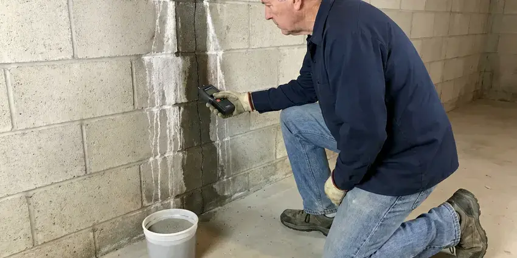

Leak Detection in Riverside, CA
Protect your property in Riverside, CA from water damage and costly repairs with our professional leak detection.
- Same-Day Leak Detection
- Written Report for Insurance
- Quick, Accurate Leak Finding
- Minimal Wall and Floor Damage

Stop Paying for Water You Never Used in Riverside, CA.
Don't let hidden leaks cause expensive damage. Call (213) 871-0701 now.
Your Go-To for Leak Detection in Riverside, CA
FKM Plumbing specializes in professional leak detection, using modern equipment to locate leaks that are often out of sight. From dripping pipes behind walls to elusive slab leaks under your foundation, we find the source of the problem before it escalates.
Our expertise includes:
- Gas line leak pinpointing with dedicated detectors.
- Detecting slab leaks under concrete foundations.
- Acoustic listening and ground microphones to hear pressurized leaks

Additional Plumbing Maintenance Services in Riverside, CA
Our maintenance and specialty plumbing services in Riverside, CA protect your home year-round and extend the life of every system.


Customers
Why Choose FKM Plumbing for Leak Detection in Riverside, CA?
Guessing at a leak location wastes money on holes in the wrong place. Our electronic methods let us mark the leak precisely before any drywall or concrete is touched.
- Pinpoint Accuracy, We combine several detection methods to confirm the leak location before opening anything.
- Accurate Location, Our technicians use advanced tools like acoustic detectors and thermal cameras to pinpoint leaks without unnecessary demolition.
- Less Damage, Precise locating means smaller repair openings and lower repair costs.
Citywide Coverage
No matter where you are located in Riverside, our expert technicians are just a call away for reliable leak detection. We cover the entire metro area, providing quick response times for all your plumbing emergencies.
Experienced Team
The FKM Plumbing team brings years of hands-on experience to every leak detection job. We've seen it all, from minor pinhole leaks to major pipe ruptures, and we know how to accurately diagnose and recommend the best course of action.
Safety-First Approach
We call 811 before excavating outdoor leaks and protect floors and finishes during indoor work. Repairs are pressure tested before we close everything up.
Trusted Certified Riverside Plumbing Services Professionals
At FKM Plumbing, we take pride in providing licensed, certified plumbing services throughout Riverside, CA. Backed by recognized industry credentials, our experienced plumbers combine technical skill with genuine customer care. Whether it is repair, installation, or maintenance, we follow strict safety and quality standards to deliver lasting results you can trust.
Call Us Now PHCC Plumbing Contractor Recognition
PHCC Plumbing Contractor Recognition Better Business Bureau (BBB) Accreditation
Better Business Bureau (BBB) Accreditation Angi Certified Pro
Angi Certified Pro ISO 9001 Quality Management Certification
ISO 9001 Quality Management CertificationReliable Leak Detection Services in Riverside, CA
Water Line Leak Detection in Riverside, CA
Hidden water leaks can occur in walls, ceilings or underground pipes. These leaks often go unnoticed until significant damage is done or water bills skyrocket. We employ non-invasive techniques like pressure testing and moisture meters to find leaks in your main water lines, supply lines and drainpipes. Our goal is to accurately locate the source of the leak, minimizing the need for extensive repairs to your Riverside home.

PEX and Copper Pipe Leak Detection in Riverside, CA
Whether your Riverside home has modern PEX plumbing or traditional copper pipes, leaks can occur. We are experienced in detecting leaks in all common piping materials found in Southern California homes. Our tools are designed to work effectively with both metallic and non-metallic pipes, so no matter your plumbing system, we can reliably locate any leak. We handle everything from pinhole leaks to joint failures.
Sewer Line Leak Detection in Riverside, CA
Sewer line leaks can cause foul odors, slow drains and potential health hazards. Our team uses camera inspections to visually identify breaks, cracks or blockages within your sewer lines. This method allows for accurate location of the leak without guesswork, leading to more efficient and targeted repairs. We repair sewer leaks in all types of piping materials common in Riverside homes, from PVC to cast iron.
Fixture and Appliance Leak Detection in Riverside, CA
Running toilets, worn faucet cartridges and leaking water heater connections waste more water than most people think. A silent toilet leak can lose hundreds of gallons a day. We check flappers, fill valves, supply lines, softeners and water heater fittings. These repairs are usually quick and inexpensive.
Pool and Spa Leak Detection in Riverside
Summer heat and wind can evaporate a lot of pool water, so it can be hard to tell normal loss from a leak. A bucket test compares evaporation to actual water loss. We then pressure test plumbing lines and use dye testing around lights, skimmers and fittings. Finding the leak protects the pool shell and the soil around it.
Water Leak Detection in Walls & Ceilings in Riverside, CA
Water leaks behind walls or in ceilings can go unnoticed for long periods, leading to extensive drywall damage, wood rot and mold. We use non-invasive methods like moisture meters, thermal cameras and borescopes to precisely pinpoint the source of these leaks. This approach minimizes the need for destructive investigation, saving you time and money on repairs to your home's interior.
Leak Detection Cost Comparison in Riverside, CA
Professional leak detection usually costs $150 to $450 for a standard home, depending on the system size and how many areas need testing. Pool leak detection usually runs $250 to $500. Repair costs vary a lot, from $150 for a fixture fix to several thousand dollars for a slab reroute. Accurate detection keeps the repair cost as low as possible.

Irrigation and Yard Leak Detection in Riverside, CA
Drip and sprinkler systems are a common source of hidden water loss in most yards. A cracked lateral or a stuck valve can waste thousands of gallons before anyone notices. We test the irrigation system separately from the house and trace leaks along buried lines. Many water providers recommend checking irrigation first when bills jump in summer.
Expert Leak Detection Near Me in Riverside, CA
When you search for 'leak detection near me' in Riverside, CA, you want a company that responds promptly and effectively. FKM Plumbing is your local plumbing expert, ready to address your leak concerns with speed and professionalism. We pride ourselves on being accessible to all residents and businesses in the area.
Our team is very familiar with the plumbing infrastructure and common leak issues in Riverside, CA. We're not just a service provider; we're part of the community, committed to offering dependable and trustworthy leak detection services right in your neighborhood. Call us for service that feels local and dependable.
FKM Plumbing at a Glance
- Licensed and insured plumbers serving Riverside, CA
- 24/7 emergency service with same-day scheduling
- Clear written estimates, no hidden fees
- 4.8-star rated by 754+ Southern California customers
Riverside Map
Riverside Information
- Population
- 318,858
- Area codes
- 951/714/909
- Service area
- Riverside and communities within 40 miles
- Nearby
- Jurupa Valley, Moreno Valley, Eastvale, Corona
Slab foundations, mineral-heavy water and buried irrigation lines all hide leaks, so accurate detection in Riverside, CA prevents costly damage and wasted water. Municipal water across much of Southern California is hard, leaving chalky scale on faucets, showerheads, and inside water heater tanks.
Expert Services
Trust our professionals for reliable FKM Plumbing solutions in Riverside, CA.
Our Specialized Plumbing Services in Riverside, CA
At FKM Plumbing, we provide a complete range of plumbing services across Riverside, CA. From leak detection to full system installations, our team ensures fast, precise, and affordable service for both residential and commercial properties. Explore our core services below:


Here Is How Our Leak Detection Process Works in Riverside, CA
We follow a methodical approach so every leak is precisely located and ready for repair.
Request a Quote
Call (213) 871-0701 and describe the signs you have noticed, such as a high bill or damp spot. We schedule a visit and explain our detection fee.
Test and Isolate
We check your meter and run pressure tests to confirm a leak and identify which part of the system is losing water. This narrows the search before we start locating.
Pinpoint and Report
We use acoustic and thermal equipment to mark the leak accurately. You get a written report and repair options with prices.
Frequently Asked Questions About Leak Detection in Riverside
The cost of leak detection in Riverside can range from $250 to $800, depending on the complexity and location of the leak. Factors like slab leaks or those requiring specialized equipment may be at the higher end. We provide a clear estimate after our initial assessment.
A slab leak is a leak in the water pipes embedded within or beneath your home's concrete slab foundation. Expansive clay and hillside soils can shift over time, putting stress on slab plumbing and separating older sewer joints. Soil that shifts and settles puts stress on plumbing lines, and temperature swings cause pipes to expand and contract over the years.
Common signs include a sudden spike in your water bill, damp spots on walls or floors, mildew odors, visible mold growth, the sound of running water when no fixtures are in use, or a continuously running water meter even when all water is off.
Small repairs usually do not, but reroutes, repipes and main line replacements often do. Requirements vary by city and county. We take care of any permits needed.
Yes, the hard water common in many parts of the country can contribute to scale buildup inside pipes, which over time can corrode pipe materials and lead to pinhole leaks or joint failures. Regular plumbing maintenance can help reduce these risks.
You can check your meter, test toilets with food coloring in the tank and look for damp spots. Finding leaks under slabs or inside walls requires specialized equipment. That is where professional detection saves time and money.
Most residential leak detection appointments take one to three hours. Larger homes, commercial buildings or multiple leaks can take longer. We give you an estimate when we schedule.
Turn off all water in the house and watch the meter. If the leak indicator or dial moves, water is escaping somewhere. A sudden jump in your water bill is another strong sign.
What People Are Saying About Our Plumbing Experts?

Daniel K.
A pipe burst at 11 pm and they actually answered. The plumber showed up within the hour, shut everything down, and had us back to normal the next morning. Could not ask for more.
Emergency Plumbing · Moreno Valley, CA
Sofia M.
Two new toilets installed in one visit, no mess left behind, and the tech even adjusted a faucet he noticed was dripping. Fair pricing and really friendly.
Toilet Installation · Moreno Valley, CA
Robert G.
The trenchless sewer replacement saved our front yard. They walked us through the camera inspection footage first so we knew exactly what we were paying for.
Sewer Line Replacement · Jurupa Valley, CA
Patricia H.
We had a slab leak that two other companies could not find. FKM Plumbing located it in under an hour, explained our options, and the price matched the quote to the dollar.
Slab Leak Repair · Fontana, CALaura S.
I scheduled a water heater replacement, and the team made the process smooth and affordable. The new unit works perfectly, and they cleaned up after completing the job.
Water Heater Replacement · Corona, CAJames P.
Our commercial plumbing system had a leak under the sink, and FKM Plumbing handled it professionally. The plumbers arrived quickly and restored everything without disruption to our customers.
Commercial Plumbing · Rialto, CA